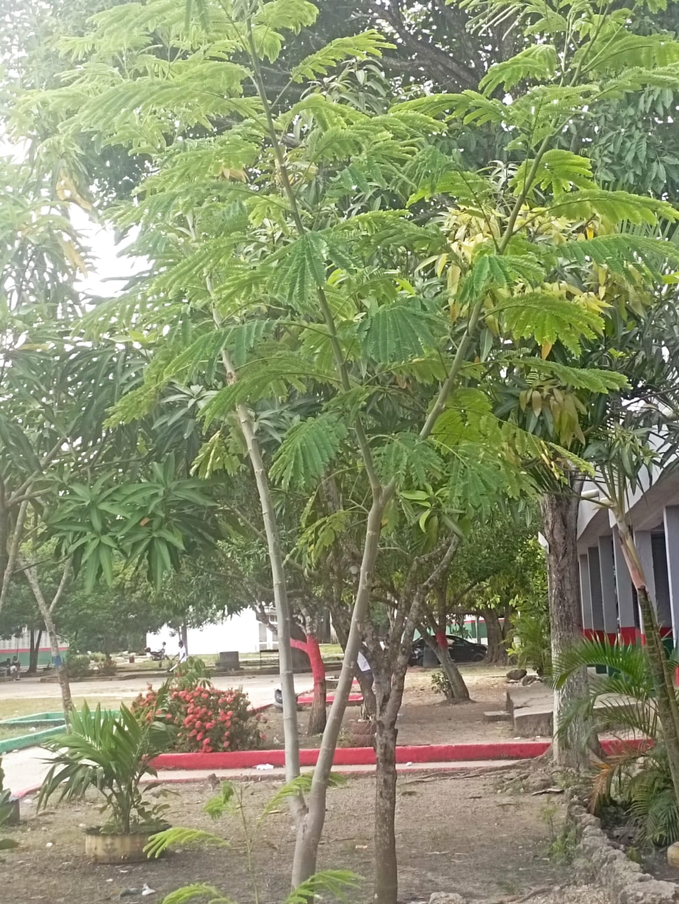

También conocida como Árbol de la Seda
Albizia julibrissin
Árbol caducifolio ornamental, con hojas finas y plumosas. En verano produce flores rosadas con aspecto sedoso.
Prefiere climas cálidos, suelos bien drenados y exposición directa al sol. No requiere mucha agua.
Muy utilizado como árbol decorativo en parques y jardines. Sus flores atraen abejas y mariposas.